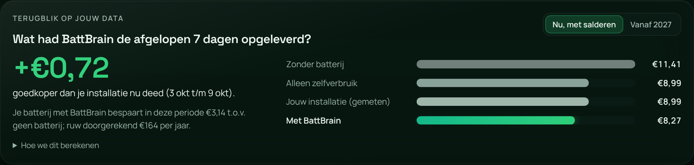
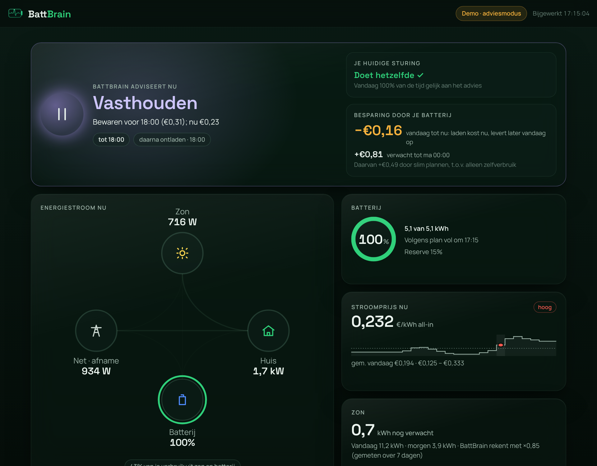

<meta charset="utf-8">
<meta name="viewport" content="width=device-width, initial-scale=1, viewport-fit=cover">
<title>BattBrain</title>
<meta name="description" content="Open-source, lokale planner en sturing voor je thuisbatterij in Home Assistant. Klaar voor het einde van salderen.">
<link rel="preconnect" href="https://fonts.googleapis.com">
<link rel="stylesheet" href="https://fonts.googleapis.com/css2?family=Space+Grotesk:wght@500;600;700&family=Manrope:wght@400;500;600;700&display=swap">
<style>
/* Layout: one reading column (max 1120px) with a split hero; the day plan of a real battery is the hero image. */
:root {
  --bg: #f3f7f4; --surface: #ffffff; --surface-2: #e8f0eb; --line: #d3e1d8;
  --ink: #0c1f17; --muted: #4b6359; --faint: #7b9187;
  --accent: #0f7d4b; --accent-fill: #2fd07a; --on-accent: #062514;
  --c-charge: #3f7ef0; --c-pv: #e9b500; --c-discharge: #f08a2c; --c-hold: #9b84ef; --c-idle: #9fb3aa;
  --warn: #c2410c;
  --display: "Space Grotesk", "Segoe UI", system-ui, sans-serif;
  --body: "Manrope", "Segoe UI", system-ui, sans-serif;
  --mono: ui-monospace, "SF Mono", Menlo, Consolas, monospace;
  --shadow: 0 30px 60px -30px rgba(12, 40, 28, .35);
}
@media (prefers-color-scheme: dark) { :root:not([data-theme="light"]) {
  --bg: #07130e; --surface: #0e2119; --surface-2: #132b20; --line: #1f3b2e;
  --ink: #ecf6f0; --muted: #a9c2b7; --faint: #6f8b7f;
  --accent: #46dc8c; --accent-fill: #2fd07a; --on-accent: #062514;
  --c-charge: #5b95ff; --c-pv: #ffd84d; --c-discharge: #ff9a3d; --c-hold: #b59cff; --c-idle: #6f877d;
  --warn: #ff8a5c; --shadow: 0 30px 60px -30px rgba(0, 0, 0, .7); color-scheme: dark; } }
:root[data-theme="dark"] {
  --bg: #07130e; --surface: #0e2119; --surface-2: #132b20; --line: #1f3b2e;
  --ink: #ecf6f0; --muted: #a9c2b7; --faint: #6f8b7f;
  --accent: #46dc8c; --accent-fill: #2fd07a; --on-accent: #062514;
  --c-charge: #5b95ff; --c-pv: #ffd84d; --c-discharge: #ff9a3d; --c-hold: #b59cff; --c-idle: #6f877d;
  --warn: #ff8a5c; --shadow: 0 30px 60px -30px rgba(0, 0, 0, .7); color-scheme: dark; }

* { box-sizing: border-box; }
body { background: var(--bg); color: var(--ink); font: 17px/1.6 var(--body); margin: 0; -webkit-font-smoothing: antialiased; }
.wrap { max-width: 1120px; margin: 0 auto; padding-inline: 20px; }
a { color: var(--accent); }
h1, h2, h3 { font-family: var(--display); letter-spacing: -0.02em; text-wrap: balance; margin: 0; }
h2 { font-size: clamp(30px, 4vw, 44px); line-height: 1.1; }
h3 { font-size: 21px; line-height: 1.25; }
p { margin: 0; }
.eyebrow { font: 700 13px var(--body); letter-spacing: .12em; text-transform: uppercase; color: var(--accent); }
.lead { color: var(--muted); font-size: 19px; max-width: 62ch; }
section { padding-block: 72px; }
.sec-head { display: flex; flex-direction: column; gap: 14px; margin-bottom: 36px; max-width: 760px; }
:focus-visible { outline: 3px solid var(--accent-fill); outline-offset: 3px; border-radius: 6px; }

/* header */
.top { position: sticky; top: env(safe-area-inset-top, 0px); z-index: 10; background: color-mix(in oklab, var(--bg) 82%, transparent); backdrop-filter: blur(14px); -webkit-backdrop-filter: blur(14px); border-bottom: 1px solid var(--line); }
.top .wrap { display: flex; align-items: center; justify-content: space-between; gap: 16px; padding-block: 12px; }
.logo { display: flex; align-items: center; gap: 10px; font: 700 21px var(--display); color: var(--ink); text-decoration: none; }
.logo b { color: var(--accent); font-weight: 700; }
.mark { width: 30px; height: 30px; border-radius: 9px; background: var(--accent-fill); display: grid; place-items: center; }
.nav { display: flex; gap: 22px; align-items: center; }
.nav a { color: var(--muted); text-decoration: none; font-weight: 600; font-size: 15px; }
.nav a:hover { color: var(--ink); }
@media (max-width: 760px) { .nav a.opt { display: none; } }

.btn { display: inline-flex; align-items: center; gap: 8px; font: 700 16px var(--body); text-decoration: none; padding: 13px 20px; border-radius: 12px; border: 1px solid var(--line); color: var(--ink); background: var(--surface); cursor: pointer; }
.btn.primary { background: var(--accent-fill); color: var(--on-accent); border-color: transparent; }
.btn:hover { transform: translateY(-1px); }
.btn.small { padding: 8px 14px; font-size: 14px; }

/* hero */
.hero { padding-block: 64px 56px; }
.hero .wrap { display: grid; grid-template-columns: minmax(0, 1fr) minmax(0, 1.05fr); gap: 48px; align-items: center; }
@media (max-width: 900px) { .hero .wrap { grid-template-columns: minmax(0, 1fr); } }
.hero h1 { font-size: clamp(40px, 6vw, 66px); line-height: 1.02; }
.hero h1 em { font-style: normal; color: var(--accent); }
.hero-copy { display: flex; flex-direction: column; gap: 22px; }
.ctas { display: flex; flex-wrap: wrap; gap: 12px; }
.trust { display: flex; flex-wrap: wrap; gap: 8px 18px; color: var(--muted); font-size: 14px; font-weight: 600; }
.trust span::before { content: "✓ "; color: var(--accent); }

.dayplan { background: var(--surface); border: 1px solid var(--line); border-radius: 22px; padding: 22px; box-shadow: var(--shadow); min-width: 0; }
.dp-head { display: flex; justify-content: space-between; align-items: baseline; gap: 12px; flex-wrap: wrap; margin-bottom: 10px; }
.dp-head strong { font: 600 18px var(--display); }
.dp-head span { color: var(--faint); font-size: 13px; }
.dp-now { display: flex; gap: 14px; align-items: center; background: var(--surface-2); border-radius: 14px; padding: 12px 14px; margin-bottom: 14px; }
.dp-now .dot { width: 12px; height: 12px; border-radius: 50%; background: var(--c-discharge); box-shadow: 0 0 0 5px color-mix(in oklab, var(--c-discharge) 25%, transparent); flex: none; }
.dp-now b { font-family: var(--display); }
.dp-now small { color: var(--muted); display: block; font-size: 14px; }
#dp svg { width: 100%; height: auto; display: block; }
#dp .lab { fill: var(--faint); font: 11px var(--body); }
#dp .soc { fill: none; stroke: var(--accent-fill); stroke-width: 2.5; }
#dp .socfill { fill: var(--accent-fill); opacity: .12; }
#dp .price { fill: none; stroke: var(--ink); stroke-width: 1.5; opacity: .55; }
.legend { display: flex; flex-wrap: wrap; gap: 6px 14px; font-size: 13px; color: var(--muted); margin-top: 10px; }
.legend i { display: inline-block; width: 10px; height: 10px; border-radius: 3px; margin-right: 6px; vertical-align: -1px; }

/* strip */
.strip { background: var(--ink); color: var(--bg); padding-block: 44px; }
.strip .wrap { display: grid; grid-template-columns: repeat(3, minmax(0, 1fr)); gap: 28px; }
@media (max-width: 760px) { .strip .wrap { grid-template-columns: minmax(0, 1fr); } }
.strip .n { font: 700 clamp(34px, 4vw, 46px) var(--display); color: var(--accent-fill); font-variant-numeric: tabular-nums; }
.strip p { opacity: .85; font-size: 15px; }

/* steps */
.steps { display: grid; grid-template-columns: repeat(4, minmax(0, 1fr)); gap: 18px; counter-reset: s; list-style: none; padding: 0; margin: 0; }
@media (max-width: 900px) { .steps { grid-template-columns: repeat(2, minmax(0, 1fr)); } }
@media (max-width: 520px) { .steps { grid-template-columns: minmax(0, 1fr); } }
.steps li { background: var(--surface); border: 1px solid var(--line); border-radius: 18px; padding: 22px; display: flex; flex-direction: column; gap: 10px; }
.steps li::before { counter-increment: s; content: counter(s); font: 700 15px var(--display); width: 30px; height: 30px; border-radius: 50%; display: grid; place-items: center; background: var(--surface-2); color: var(--accent); }
.steps p { color: var(--muted); font-size: 15.5px; }

/* proof */
.proof { display: grid; grid-template-columns: minmax(0, 1fr) minmax(0, 1fr); gap: 28px; align-items: start; }
@media (max-width: 900px) { .proof { grid-template-columns: minmax(0, 1fr); } }
.tbl-wrap { overflow-x: auto; background: var(--surface); border: 1px solid var(--line); border-radius: 18px; }
table { border-collapse: collapse; width: 100%; font-variant-numeric: tabular-nums; }
th, td { padding: 13px 16px; text-align: left; border-bottom: 1px solid var(--line); white-space: nowrap; }
th { font-size: 13px; text-transform: uppercase; letter-spacing: .06em; color: var(--faint); }
td.num, th.num { text-align: right; }
tr.us td { font-weight: 700; background: color-mix(in oklab, var(--accent-fill) 14%, transparent); }
tr.muted td { color: var(--faint); }
tr:last-child td { border-bottom: 0; }
.note { color: var(--muted); font-size: 15px; margin-top: 14px; }
.shot { border-radius: 16px; border: 1px solid var(--line); box-shadow: var(--shadow); display: block; width: 100%; height: auto; }
figure { margin: 0; display: flex; flex-direction: column; gap: 10px; }
figcaption { color: var(--faint); font-size: 14px; }

/* safety */
.rules { display: grid; grid-template-columns: repeat(3, minmax(0, 1fr)); gap: 0; border: 1px solid var(--line); border-radius: 18px; overflow: hidden; background: var(--surface); }
@media (max-width: 900px) { .rules { grid-template-columns: minmax(0, 1fr); } }
.rules div { padding: 22px; border-right: 1px solid var(--line); border-bottom: 1px solid var(--line); display: flex; flex-direction: column; gap: 6px; }
.rules p { color: var(--muted); font-size: 15.5px; }

/* pricing */
.plans { display: grid; grid-template-columns: minmax(0, 1fr) minmax(0, 1fr); gap: 20px; }
@media (max-width: 760px) { .plans { grid-template-columns: minmax(0, 1fr); } }
.plan { background: var(--surface); border: 1px solid var(--line); border-radius: 20px; padding: 28px; display: flex; flex-direction: column; gap: 16px; }
.plan.feature { border: 2px solid var(--accent-fill); }
.price { font: 700 40px var(--display); }
.price small { font: 500 16px var(--body); color: var(--muted); }
.plan ul { margin: 0; padding-left: 20px; color: var(--muted); display: flex; flex-direction: column; gap: 6px; }
.tag { align-self: flex-start; font-size: 12px; font-weight: 700; letter-spacing: .08em; text-transform: uppercase; padding: 4px 10px; border-radius: 999px; background: var(--surface-2); color: var(--accent); }

/* install + waitlist */
.split { display: grid; grid-template-columns: minmax(0, 1fr) minmax(0, 1fr); gap: 24px; }
@media (max-width: 900px) { .split { grid-template-columns: minmax(0, 1fr); } }
.card { background: var(--surface); border: 1px solid var(--line); border-radius: 20px; padding: 26px; display: flex; flex-direction: column; gap: 14px; min-width: 0; }
pre { margin: 0; background: var(--ink); color: var(--bg); border-radius: 12px; padding: 14px 16px; font: 14px/1.6 var(--mono); overflow-x: auto; }
.copyrow { display: flex; gap: 8px; align-items: stretch; }
.copyrow code { flex: 1; min-width: 0; background: var(--surface-2); border-radius: 10px; padding: 11px 12px; font: 14px var(--mono); overflow-x: auto; white-space: nowrap; }
form { display: flex; flex-wrap: wrap; gap: 10px; }
input[type=email] { flex: 1 1 220px; min-width: 0; font: 16px var(--body); padding: 13px 14px; border-radius: 12px; border: 1px solid var(--line); background: var(--bg); color: var(--ink); }
.fine { color: var(--faint); font-size: 14px; }
#wl-msg { font-weight: 600; color: var(--accent); }

/* faq */
.faq { display: flex; flex-direction: column; border-top: 1px solid var(--line); }
.faq details { border-bottom: 1px solid var(--line); padding-block: 16px; }
.faq summary { cursor: pointer; font: 600 18px var(--display); list-style: none; display: flex; justify-content: space-between; gap: 12px; }
.faq summary::after { content: "+"; color: var(--accent); font-size: 22px; line-height: 1; }
.faq details[open] summary::after { content: "−"; }
.faq p { color: var(--muted); margin-top: 10px; max-width: 72ch; }

footer { border-top: 1px solid var(--line); padding-block: 32px; color: var(--faint); font-size: 14px; }
footer .wrap { display: flex; flex-wrap: wrap; justify-content: space-between; gap: 12px; }
@media (prefers-reduced-motion: reduce) { .btn:hover { transform: none; } }
</style>

<header class="top">
  <div class="wrap">
    <a class="logo" href="#top"><span class="mark" aria-hidden="true"><svg width="16" height="16" viewBox="0 0 24 24"><path d="M13 2 4 14h7l-1 8 9-12h-7z" fill="#062514"/></svg></span><span>Batt<b>Brain</b></span></a>
    <nav class="nav" aria-label="Hoofdmenu">
      <a class="opt" href="#hoe">Hoe het werkt</a>
      <a class="opt" href="#bewijs">Resultaten</a>
      <a class="opt" href="#prijzen">Prijzen</a>
      <a class="opt" href="#faq">Vragen</a>
      <a class="btn small" href="https://github.com/pwnypower/Smartcharging-HA/tree/main/battbrain" target="_blank" rel="noopener">GitHub</a>
    </nav>
  </div>
</header>

<main id="top">
  <section class="hero">
    <div class="wrap">
      <div class="hero-copy">
        <span class="eyebrow">Open source · draait lokaal · versie 1.0</span>
        <h1>Je thuisbatterij slim gestuurd, <em>op jouw voorwaarden</em>.</h1>
        <p class="lead">BattBrain plant je batterij elk kwartier op de stroomprijzen van vandaag en morgen, je zonverwachting en je eigen verbruik. Het legt elke keuze uit en draait in je eigen Home Assistant. Geen account, geen cloud, geen leverancier die meekijkt.</p>
        <div class="ctas">
          <a class="btn primary" href="#installeren">Installeren in Home Assistant</a>
          <a class="btn" href="#wachtlijst">Wachtlijst voor Hosted</a>
        </div>
        <div class="trust"><span>Gratis zelf draaien</span><span>Elke leverancier</span><span>Klaar voor 2027</span></div>
      </div>

      <div class="dayplan" aria-label="Voorbeeld van een dagplan">
        <div class="dp-head"><strong>Dagplan, 9 oktober 2026</strong><span>5,1 kWh · Frank Energie, all-in</span></div>
        <div class="dp-now"><span class="dot" aria-hidden="true"></span><div><b>18:00 · Ontladen</b><small>Duur uur (€0,31): je huis draait op de batterij, geladen om 14:00 voor €0,13.</small></div></div>
        <div id="dp"></div>
        <div class="legend" id="dp-legend"></div>
      </div>
    </div>
  </section>

  <div class="strip">
    <div class="wrap">
      <div><div class="n">1 jan 2027</div><p>stopt salderen. Teruggeleverde stroom levert daarna minder op dan wat je inkoopt, en elke kWh die je zelf gebruikt telt.</p></div>
      <div><div class="n">79.000+</div><p>thuisbatterijen geregistreerd in Nederland (september 2026), met zo'n 8.000 per maand erbij.</p></div>
      <div><div class="n">96%</div><p>van het theoretische maximum haalde BattBrain op onze testdagen zonder salderen, met alleen wat vooraf bekend was.</p></div>
    </div>
  </div>

  <section id="hoe">
    <div class="wrap">
      <div class="sec-head">
        <span class="eyebrow">Hoe het werkt</span>
        <h2>Van installeren tot sturen, in je eigen tempo.</h2>
      </div>
      <ol class="steps">
        <li><h3>Installeer de app</h3><p>Voeg de repository toe in Home Assistant en installeer BattBrain. Zonder add-on-store kan het ook met Docker.</p></li>
        <li><h3>Hij zoekt je sensoren</h3><p>Batterij, prijs, zonverwachting en vermogen vindt BattBrain zelf. De kaart Installatie laat zien of alles klopt.</p></li>
        <li><h3>Kijk terug op je eigen week</h3><p>BattBrain speelt je afgelopen dagen opnieuw af en toont wat het had opgeleverd, nu en met de regels van 2027.</p></li>
        <li><h3>Zet sturen aan als je overtuigd bent</h3><p>Eerst alleen advies naast je huidige automatisering. Sturen zet je zelf aan, en met één klik pauzeer je.</p></li>
      </ol>
    </div>
  </section>

  <section id="bewijs" style="padding-top:0">
    <div class="wrap">
      <div class="sec-head">
        <span class="eyebrow">Gemeten, niet beloofd</span>
        <h2>Wat BattBrain opleverde op een echte installatie.</h2>
        <p class="lead">Solis S5-EH1P met 5,1 kWh en een dynamisch contract bij Frank Energie, 7 tot en met 9 oktober 2026: drie grijze herfstdagen, opnieuw afgespeeld in de BattBrain-simulator.</p>
      </div>
      <div class="proof">
        <div>
          <div class="tbl-wrap">
            <table>
              <thead><tr><th>Besparing t.o.v. geen batterij</th><th class="num">Nu</th><th class="num">2027</th></tr></thead>
              <tbody>
                <tr><td>Gewoon zelfverbruik</td><td class="num">€0,74</td><td class="num">€2,27</td></tr>
                <tr><td>Drempel-automatisering</td><td class="num">€0,77</td><td class="num">€2,00</td></tr>
                <tr class="us"><td>BattBrain</td><td class="num">€0,86</td><td class="num">€2,39</td></tr>
                <tr class="muted"><td>Maximum, met perfecte voorspelling</td><td class="num">€1,12</td><td class="num">€2,49</td></tr>
              </tbody>
            </table>
          </div>
          <p class="note">Bij een kleine batterij in oktober is het verschil met gewoon zelfverbruik klein. Het groeit met een grotere batterij, grotere prijsverschillen in de winter en na 2027. Daarom rekent BattBrain het voor jouw eigen installatie uit.</p>
        </div>
        <figure>
          
          <figcaption>De kaart Terugblik in de app (demomodus).</figcaption>
        </figure>
      </div>
    </div>
  </section>

  <section style="padding-top:0">
    <div class="wrap">
      <figure>
        
        <figcaption>Het dashboard: wat de batterij nu doet en waarom, de energiestroom en het plan voor de komende dag.</figcaption>
      </figure>
    </div>
  </section>

  <section id="veilig">
    <div class="wrap">
      <div class="sec-head">
        <span class="eyebrow">Veilig sturen</span>
        <h2>Bij twijfel doet je batterij gewoon zelfverbruik.</h2>
      </div>
      <div class="rules">
        <div><h3>Twee knoppen</h3><p>BattBrain verandert alleen de reserveschakelaar en het doel-SoC. De instellingen van je omvormer blijven van jou.</p></div>
        <div><h3>Terugvallen</h3><p>Geen verbinding, lading onbekend of een plan ouder dan 20 minuten: de reserve gaat uit en de omvormer doet zelfverbruik.</p></div>
        <div><h3>Prijsgrens</h3><p>Nooit laden van het net boven je maximumprijs. Het doel blijft altijd tussen je reserve en 100%.</p></div>
        <div><h3>Rustig schakelen</h3><p>De schakelaar gaat hooguit eens per 10 minuten om, zodat je omvormer niet heen en weer springt.</p></div>
        <div><h3>Nagekeken</h3><p>Elk commando wordt gecontroleerd. Volgt de omvormer niet, dan zie je dat meteen in het dashboard.</p></div>
        <div><h3>Geen ruzie</h3><p>Staat je oude automatisering nog aan, dan wacht BattBrain. Twee systemen op één batterij werken elkaar tegen.</p></div>
      </div>
    </div>
  </section>

  <section id="prijzen" style="padding-top:0">
    <div class="wrap">
      <div class="sec-head">
        <span class="eyebrow">Prijzen</span>
        <h2>Eén product. Zelf draaien of laten draaien.</h2>
        <p class="lead">In beide zit dezelfde planner. Wie betaalt, krijgt gemak, geen betere sturing. Wat gratis is, gaat nooit achter een betaalmuur.</p>
      </div>
      <div class="plans">
        <div class="plan">
          <span class="tag">Nu beschikbaar</span>
          <h3>Zelf hosten</h3>
          <div class="price">Gratis</div>
          <ul>
            <li>Planner, advies, terugblik en sturing</li>
            <li>Home Assistant OS, of Docker naast HA Container</li>
            <li>Al je gegevens blijven thuis</li>
            <li>Hulp via GitHub en het Tweakers-forum</li>
          </ul>
          <a class="btn primary" href="#installeren">Installeren</a>
        </div>
        <div class="plan feature">
          <span class="tag">Binnenkort</span>
          <h3>BattBrain Hosted</h3>
          <div class="price">€3 <small>per maand · eerste 3 maanden gratis</small></div>
          <ul>
            <li>Dezelfde planner, wij doen installatie en updates</li>
            <li>Melding als de sturing stopt</li>
            <li>Geschiedenis en jaaroverzicht over meerdere jaren</li>
            <li>Support per e-mail binnen 2 werkdagen</li>
          </ul>
          <a class="btn" href="#wachtlijst">Op de wachtlijst</a>
        </div>
      </div>
    </div>
  </section>

  <section id="installeren" style="padding-top:0">
    <div class="wrap split">
      <div class="card">
        <span class="eyebrow">Installeren</span>
        <h3>Home Assistant OS of Supervised</h3>
        <p>Instellingen → Apps → Store → ⋮ → Repositories, en voeg deze toe:</p>
        <div class="copyrow"><code id="repo-url">https://github.com/pwnypower/Smartcharging-HA</code><button class="btn small" type="button" id="copy-repo">Kopieer</button></div>
        <p>Installeer BattBrain, start hem en open BattBrain in de zijbalk.</p>
        <h3>Home Assistant Container of Core</h3>
        <pre>cd battbrain/standalone
cp options.example.json data/options.json
echo "HA_URL=http://192.168.1.10:8123" &gt; .env
echo "HA_TOKEN=..." &gt;&gt; .env
docker compose up -d</pre>
      </div>
      <div class="card" id="wachtlijst">
        <span class="eyebrow">Wachtlijst</span>
        <h3>Geen zin in onderhoud?</h3>
        <p>BattBrain Hosted is in de maak. Laat je e-mailadres achter, dan hoor je het als eerste. We sturen alleen berichten over BattBrain.</p>
        <form id="wl" novalidate>
          <label class="fine" for="wl-email" style="flex-basis:100%">E-mailadres</label>
          <input id="wl-email" type="email" name="email" autocomplete="email" placeholder="jij@voorbeeld.nl" required>
          <button class="btn primary" type="submit">Aanmelden</button>
        </form>
        <p id="wl-msg" role="status"></p>
        <p class="fine">Liever testen? Met een thuisbatterij van een ander merk dan Solis ben je extra welkom: open een issue op GitHub.</p>
      </div>
    </div>
  </section>

  <section id="faq" style="padding-top:0">
    <div class="wrap">
      <div class="sec-head"><span class="eyebrow">Vragen</span><h2>Wat mensen ons vragen.</h2></div>
      <div class="faq">
        <details><summary>Werkt het met mijn batterij?</summary><p>Als je batterij in Home Assistant een laadtoestand heeft, plus een schakelaar om van het net te laden of een reserve vast te houden en een doel-SoC, dan kan BattBrain hem sturen. Getest is de Solis S5-EH1P; andere merken zoeken we testers voor. Adviesmodus werkt met elke batterij die een laadtoestand doorgeeft.</p></details>
        <details><summary>Welke energieleveranciers worden ondersteund?</summary><p>Elke leverancier met dynamische prijzen waarvan een sensor in Home Assistant de prijzen van vandaag en morgen heeft: Frank Energie, Zonneplan, Tibber, EnergyZero, Nordpool en andere. Je hoeft niet over te stappen.</p></details>
        <details><summary>Hoeveel bespaar ik?</summary><p>Dat hangt af van je batterij, je verbruik, de zon en het seizoen. Bij 5 kWh in een grijze oktoberweek is het verschil met gewoon zelfverbruik klein; met een grotere batterij, in de winter en na 2027 groter. De Terugblik in de app rekent het uit op je eigen gegevens. Wij beloven geen bedragen die we niet gemeten hebben.</p></details>
        <details><summary>Handelt BattBrain op de onbalansmarkt?</summary><p>Nee. Daarvoor heb je een leverancier of een erkende handelspartij nodig. BattBrain plant op de dagprijzen en kan daardoor naast elk contract draaien.</p></details>
        <details><summary>Is het veilig om mijn batterij te laten sturen?</summary><p>BattBrain begint in adviesmodus en stuurt pas als jij dat aanzet. Het verandert alleen de reserveschakelaar en het doel-SoC, valt bij twijfel terug op zelfverbruik en laadt nooit boven je maximumprijs. Het is open-source software zonder garantie; controleer de instellingen van je omvormer zelf.</p></details>
        <details><summary>Wat gebeurt er met mijn gegevens?</summary><p>Niets buiten je huis. BattBrain draait lokaal, heeft geen account en stuurt geen telemetrie. Het logboek en de gemeten besparing staan in de map van de app.</p></details>
        <details><summary>Waarom open source?</summary><p>Software die je batterij aanstuurt, moet je kunnen controleren. BattBrain valt onder de AGPL-3.0: je mag het gebruiken, aanpassen en delen, en niemand kan het gesloten doorverkopen.</p></details>
        <details><summary>Ik gebruik de Smartcharging-blueprint. Wat nu?</summary><p>Laat BattBrain eerst in adviesmodus naast de blueprint draaien. Het dashboard laat zien hoe vaak ze hetzelfde doen. Ben je overtuigd, zet de blueprint uit en sturen aan.</p></details>
      </div>
    </div>
  </section>
</main>

<footer>
  <div class="wrap">
    <span>BattBrain · open source onder AGPL-3.0 · gemaakt door een thuisbatterij-bezitter met Home Assistant</span>
    <a href="https://github.com/pwnypower/Smartcharging-HA/tree/main/battbrain" target="_blank" rel="noopener">Broncode op GitHub</a>
  </div>
</footer>

<script>
(function () {
  "use strict";
  // Dagplan 9 oktober 2026: BattBrain-planner op Frank-prijzen (per uur, all-in) en een voorbeeldhuishouden.
  var PRICE = [.149,.149,.149,.149,.149,.149,.164,.199,.205,.184,.158,.134,.125,.125,.125,.143,.167,.232,.307,.333,.307,.292,.277,.277];
  var ACT = "hhhhhhhhhhhhhhhhhhhhhhgghhhhddddddddiiiiiiiiiiiissssssssggggiiiiiiiihhhhddddddddddddiiiiiiiiiiii";
  var SOC = [24,24,24,24,24,24,24,24,24,24,24,24,24,24,24,24,24,24,24,24,24,24,32,44,44,44,44,44,40,36,32,28,24,20,18,16,16,16,16,16,16,16,16,16,16,16,16,16,20,24,28,32,38,44,50,56,64,76,88,100,100,100,100,100,100,100,100,100,100,100,100,100,94,88,82,76,68,60,52,44,36,28,20,16,16,16,16,16,16,16,16,16,16,16,16,16];
  var COL = { g: "--c-charge", s: "--c-pv", d: "--c-discharge", h: "--c-hold", i: "--c-idle" };
  var NAME = { g: "laden van het net", s: "zon opslaan", d: "ontladen", h: "vasthouden", i: "zelfverbruik" };
  var NS = "http://www.w3.org/2000/svg";
  function el(n, a, p) { var e = document.createElementNS(NS, n); for (var k in a) e.setAttribute(k, a[k]); if (p) p.appendChild(e); return e; }
  var W = 560, H = 230, L = 34, R = 8, top = 10, socH = 110, laneY = 132, laneH = 16, pTop = 160, pH = 44;
  var x = function (q) { return L + (W - L - R) * q / 96; };
  var svg = el("svg", { viewBox: "0 0 " + W + " " + H, role: "img", "aria-label": "Laadtoestand, actie per kwartier en stroomprijs per uur op 9 oktober 2026" });
  var ys = function (s) { return top + socH * (1 - s / 100); };
  var d = "M" + x(0) + " " + ys(SOC[0]);
  for (var q = 0; q < 96; q++) d += " L" + x(q + 1) + " " + ys(SOC[q]);
  el("path", { d: d + " L" + x(96) + " " + (top + socH) + " L" + x(0) + " " + (top + socH) + " Z", "class": "socfill" }, svg);
  el("path", { d: d, "class": "soc" }, svg);
  [0, 50, 100].forEach(function (v) { var t = el("text", { x: L - 6, y: ys(v) + 4, "text-anchor": "end", "class": "lab" }, svg); t.textContent = v + "%"; });
  for (q = 0; q < 96; q++) el("rect", { x: x(q), y: laneY, width: x(q + 1) - x(q) + 0.3, height: laneH, fill: "var(" + COL[ACT[q]] + ")" }, svg);
  var lo = 0.10, hi = 0.35, yp = function (p) { return pTop + pH * (1 - (p - lo) / (hi - lo)); };
  var pd = "";
  for (var h = 0; h < 24; h++) pd += (h ? " L" : "M") + x(h * 4) + " " + yp(PRICE[h]) + " L" + x(h * 4 + 4) + " " + yp(PRICE[h]);
  el("path", { d: pd, "class": "price" }, svg);
  [["€0,10", lo], ["€0,30", 0.30]].forEach(function (a) { var t = el("text", { x: L - 6, y: yp(a[1]) + 4, "text-anchor": "end", "class": "lab" }, svg); t.textContent = a[0]; });
  [0, 6, 12, 18, 24].forEach(function (hh) { var t = el("text", { x: x(hh * 4), y: H - 2, "text-anchor": hh === 0 ? "start" : hh === 24 ? "end" : "middle", "class": "lab" }, svg); t.textContent = (hh === 24 ? "24" : String(hh).padStart(2, "0")) + ":00"; });
  el("line", { x1: x(72), x2: x(72), y1: top, y2: pTop + pH, stroke: "var(--ink)", "stroke-dasharray": "3 3", opacity: 0.5 }, svg);
  document.getElementById("dp").appendChild(svg);
  var lg = document.getElementById("dp-legend");
  "gshdi".split("").forEach(function (k) { var s = document.createElement("span"), i = document.createElement("i"); i.style.background = "var(" + COL[k] + ")"; s.appendChild(i); s.appendChild(document.createTextNode(NAME[k])); lg.appendChild(s); });
  var sp = document.createElement("span"); sp.textContent = "lijn boven: laadtoestand · lijn onder: prijs per uur"; lg.appendChild(sp);

  document.getElementById("copy-repo").addEventListener("click", function () {
    var b = this, text = document.getElementById("repo-url").textContent;
    var done = function () { b.textContent = "Gekopieerd"; setTimeout(function () { b.textContent = "Kopieer"; }, 1600); };
    try {
      navigator.clipboard.writeText(text).then(done, function () { selectText(); });
    } catch (e) { selectText(); }
    function selectText() { var r = document.createRange(); r.selectNodeContents(document.getElementById("repo-url")); var s = getSelection(); s.removeAllRanges(); s.addRange(r); b.textContent = "Geselecteerd"; }
  });

  document.getElementById("wl").addEventListener("submit", function (ev) {
    ev.preventDefault();
    var input = document.getElementById("wl-email"), msg = document.getElementById("wl-msg");
    if (!input.value || !input.checkValidity()) { msg.textContent = "Vul een geldig e-mailadres in."; input.focus(); return; }
    // De wachtlijst wordt gekoppeld zodra de site op een eigen domein staat (zie marketing/README.md).
    msg.textContent = "De wachtlijst staat nog niet open, dus je adres is niet opgeslagen. Volg BattBrain tot de lancering op GitHub.";
  });
})();
</script>
